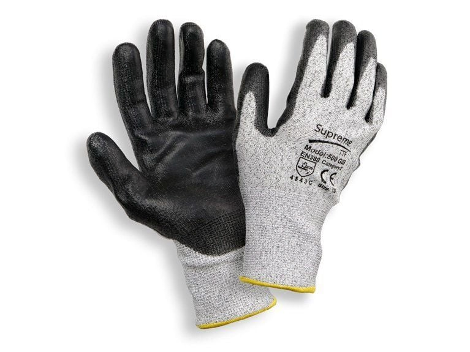

Welcome to Gloves Inc., your one-stop shop for high-quality cycling and motorcycle gloves. At Gloves Inc., we understand the importance of protecting your hands while on the road or trail. That's why we offer a wide range of gloves specifically designed for cycling and motorcycle enthusiasts. Our gloves are made with the highest quality materials and are built to last, so you can focus on your ride without worrying about your gear. In addition to our durable construction, our gloves also feature advanced technologies such as gel padding and ventilation to keep your hands comfortable and sweat-free. Whether you're a casual rider or a hardcore enthusiast, we have a pair of gloves that will suit your needs. Thank you for choosing Gloves Inc. for all of your cycling and motorcycle glove needs.
"I recently purchased a pair of cycling gloves from Gloves Inc. and I couldn't be happier with my purchase. Not only are these gloves extremely comfortable and well-ventilated, but they also provide excellent protection for my hands. I've been using them on long rides and my hands have never felt better. The gel padding in the palms helps to absorb shock and reduce hand fatigue, while the adjustable wrist closures keep the gloves securely in place. Overall, I am extremely satisfied with the quality and performance of these gloves and will definitely be purchasing more in the future. Thank you, Gloves Inc., for creating such a fantastic product!"
"From the moment I placed my order online, the customer service team at Gloves Inc. went above and beyond to ensure my satisfaction. They were quick to answer any questions I had and even offered suggestions based on my specific needs. Upon receiving my gloves, I was immediately impressed by the high quality of the materials and craftsmanship. The gloves fit like a glove (pun intended) and provide excellent protection while riding. Not only do they look great, but they also have a number of features that make them extremely practical for any rider. The touchscreen compatibility is a game changer and the ventilation system keeps my hands cool and comfortable even on the hottest days. Overall, I am extremely satisfied with my purchase from Gloves Inc. and I highly recommend them to any rider looking for top-notch protection and style. The team at Gloves Inc. truly cares about their customers and it shows in the attention to detail and exceptional service they provide. Thank you, Gloves Inc. for helping me find the perfect gloves for my rides!"